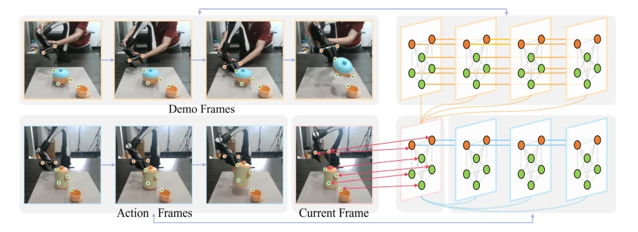
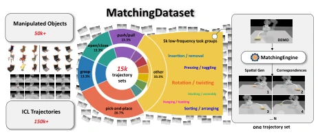
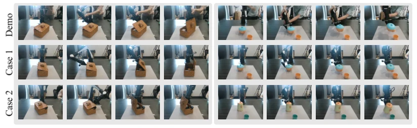
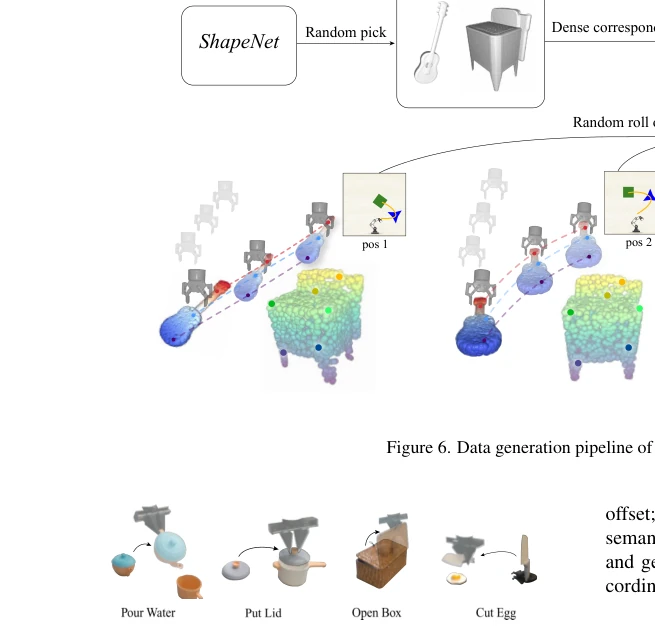
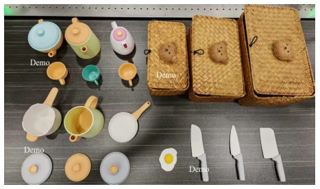
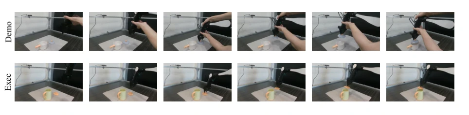
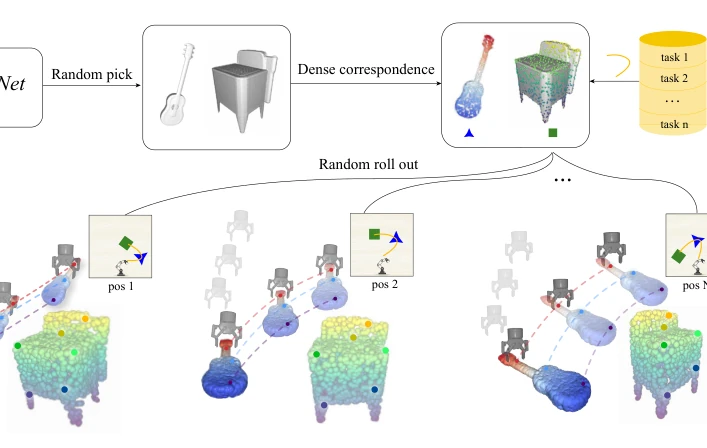
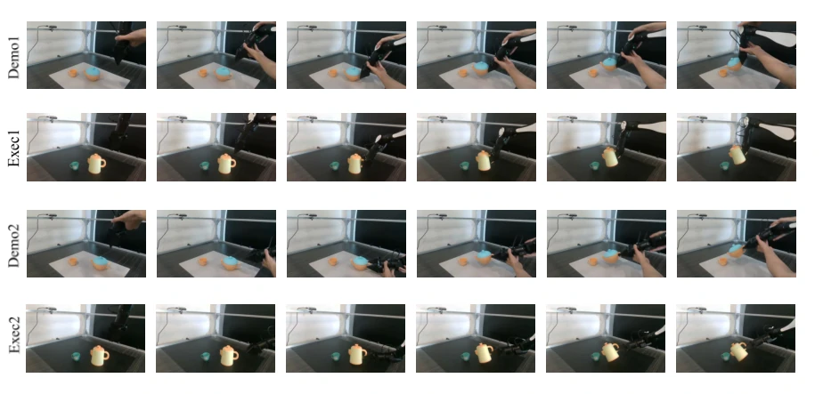

Figure 1. The overview of MatchingPolicy. Correspondence points are extracted using a two-stage feature matching algorithm with VFMs and subsequently passed into a graph-based diffusion policy model to predict 6D gripper poses. These predicted motions are then translated into robot joint commands, with the model trained end-to-end on our synthetic dataset.

Figure 2. Our Correspondence-Aware Policy Model. Left: The selected correspondence key points on 2D images of demonstration frames, current frame, and action frames. Right: The structure of our graph-based policy model. The red lines with two-way arrow indicate the one-to-one mapping between the graph nodes in the network and the key points in the current frame. Node lines indicate data transfer. The lines connecting the two frames are a simplified view; the detailed node-to-node links are omitted for visual clarity

Figure 3. Overview of MATCHINGDATASET, MATCHINGENGINE spatially retargets each reference demonstration to produce task- consistent trajectories with ground-truth 3D correspondences.
实验Experiments
在 RLBench 的 36 个任务上，MatchingPolicy 在 OOD-Hard 任务中显著优于 InstantPolicy 和 KAT [8]，无需微调即可达到高成功率。实机实验在 AirBot 机械臂上验证了跨布局（Layout）和跨物体（Shape）的泛化能力，平均成功率在 Layout-Hard 下达 65%，远超基线。消融实验表明，两阶段匹配比 naive 3D 匹配更准确，且“重叠块”规划策略（Overlapping Chunks）提升了轨迹平滑度。尽管在 Shape 泛化上表现优异，但实机速度较慢，且视图选择依赖特定平台配置。在 Put Lid 任务中，它能正确识别不同形状的盖子，证明了跨类别泛化能力，但面对动态任务如 Fling 仍无能为力 [12]。
—

Figure 5. Generalization capabilities of MatchingPolicy with a single demonstration. Left: Novel layouts; Right: Unseen object instances

Figure 7. The real-world four tasks for evaluation.

Figure 8. The diverse set of test objects

Figure 9. Cross-Category Generalization
其他图片Other Figures

Figure 6. Data generation pipeline of MatchingDataset

Figure 10. Interaction following shown in the demonstrations.